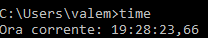
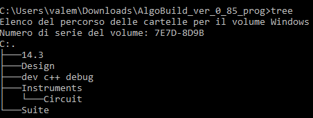
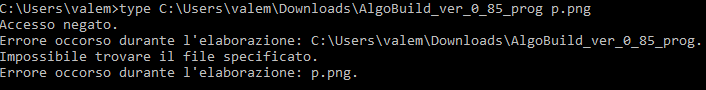

TASKLIST
Visualizza tutte le attività in esecuzione inclusi i servizi.

TASKKILL
Interrompe o arresta un processo o un'applicazione in esecuzione.

TIME
Visualizza o imposta l'ora del sistema.
 TITLE
Imposta il titolo della finestra per una sessione CMD.EXE.

TREE
Visualizza graficamente la struttura di directory di un'unità o percorso.
 TYPE
Visualizza il contenuto di un file di testo.
